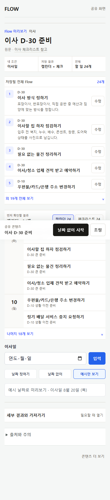
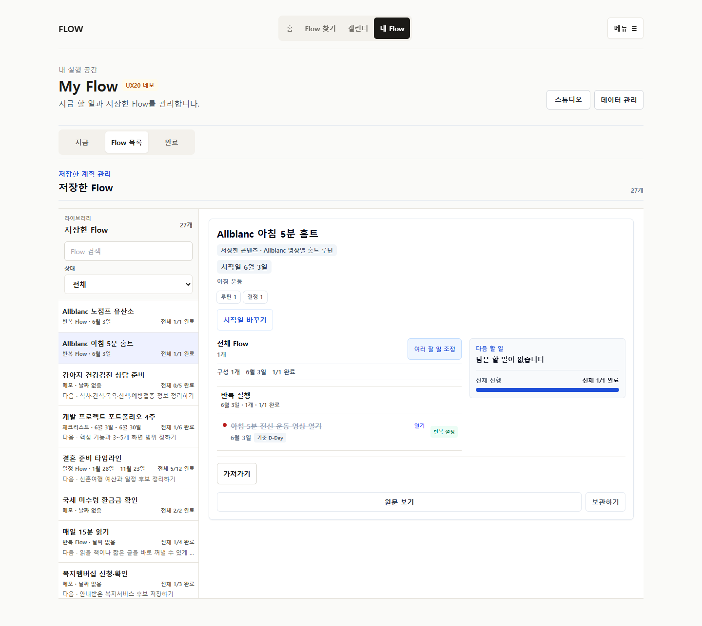
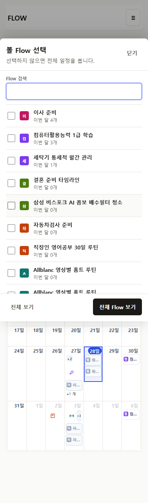
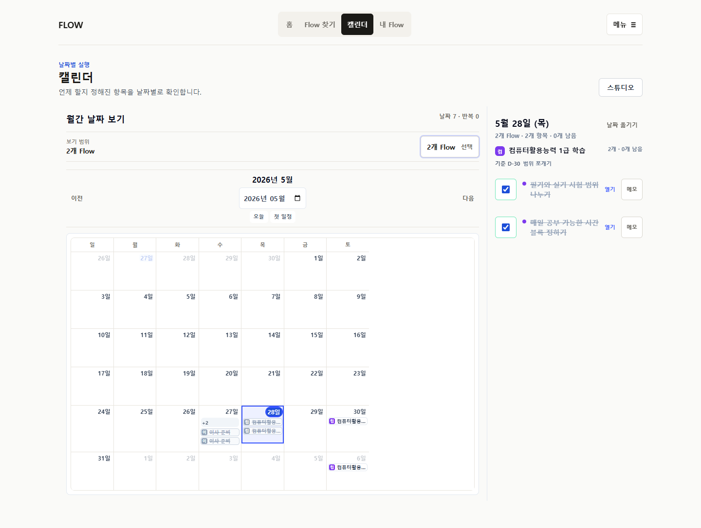

판정: 내부 구현 완료, owner review 대기
자동화·브라우저 gate는 통과했습니다. 실제 사용자가 이해하고 만족한다는 의미는 아닙니다. 다음 결정은 화면을 직접 사용한 owner와 독립 reviewer가 keep / revise / redesign으로 내립니다.
하나의 화면 문법
1. 저장될 전체 내용
짧은 outline으로 먼저 확인하고 긴 Flow만 한 번에 펼칩니다.
2. 실제 결과
Calendar, Checklist, Sheet, Memo, Flow 실행 중 콘텐츠에 맞는 결과만 실제 데이터로 보여줍니다.
3. 맥락 안 수정
Flow 제목과 item 제목·날짜·메모는 해당 row에서 열고 source는 보존합니다.
4. 같은 실행 문법
일반 할 일과 routine occurrence는 완료·다시 열기·메모·resource 역할을 공유합니다.
Owner feedback 결과
| 문제 | 현재 구현 | 판정 |
|---|---|---|
| 저장 전 조정이 피상적 | 전체 outline + row별 제목·날짜·메모 + 실제 result preview | Supported |
| 홈트가 복잡하고 4주 고정 | 요일·시간·duration·종료 없음/until/count, 4주는 preview | Supported, 관찰 필요 |
| 홈트만 특별한 실행 UI | workout-only result control 0, common occurrence/resource | Supported |
| Calendar Flow chip 과밀 | 6개 이상 searchable multi-select picker | Supported |
| 다섯 형태가 예시뿐 | 5개 actual-data renderer, primary 1 + secondary 최대 2 | Supported |
| My Flow 구조 불명확 | 모바일 drill-in, wide rail/detail, large-library search | Supported, 관찰 필요 |
현재 구현 화면






남은 위험
Routine mobile density
전용 UI는 제거했지만 빈도·시간·종료 설정 자체가 긴 편입니다.
전용 UI는 제거했지만 빈도·시간·종료 설정 자체가 긴 편입니다.
Long Flow disclosure
24개 전체를 펼치면 길어집니다. 5개 기본 summary가 실제로 충분한지는 미검증입니다.
24개 전체를 펼치면 길어집니다. 5개 기본 summary가 실제로 충분한지는 미검증입니다.
Large library scale
27개 fixture는 통과했지만 50개 이상 virtualization과 sorting preference는 미검증입니다.
27개 fixture는 통과했지만 50개 이상 virtualization과 sorting preference는 미검증입니다.
No observed users
화면 이해도, 첫 행동 발견성, artifact 추천 신뢰는 사람에게 확인해야 합니다.
화면 이해도, 첫 행동 발견성, artifact 추천 신뢰는 사람에게 확인해야 합니다.